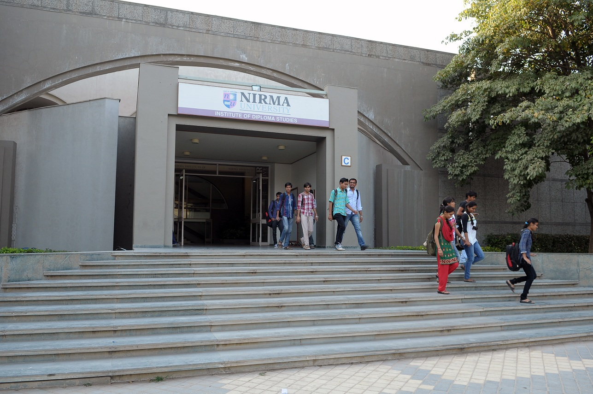

(1)Primary use:
-Academics: The primary function is for teaching and learning, housing core IOT departments like Computer Science, Electronics, etc..
-Infrastructure: Contains essential amenities like lecture halls, computer labs (connected via high-speed network), and faculty spaces.
-Strategic Location: Its proximity to D Block places it near the campus's Healthcare Centre and other key facilities, making it convenient for students and staff.
(2)Facilities:
The block is designed specifically for architecture education and includes.
Primarily houses facilities for the Institute of Architecture and Planning (IAP), featuring auditoriums, labs, studios, and a courtyard used for events like Kalp, while also being near the central Healthcare Centre, serving as a key academic and activity hub within the university's modern, green campus.
(3)Infrastructure:
Benefits from Nirma's overall state-of-the-art infrastructure, including Wi-Fi, labs, and auditoriums.
(4)Event Space:
The C-Block courtyard hosts events, workshops, and social gatherings, like the "Kalp" festival.
"C Block" at Nirma University primarily houses facilities for the Institute of Architecture and Planning (IAP), featuring auditoriums, labs, studios, and a courtyard used for events like Kalp, while also being near the central Healthcare Centre, serving as a key academic and activity hub within the university's modern, green campus.